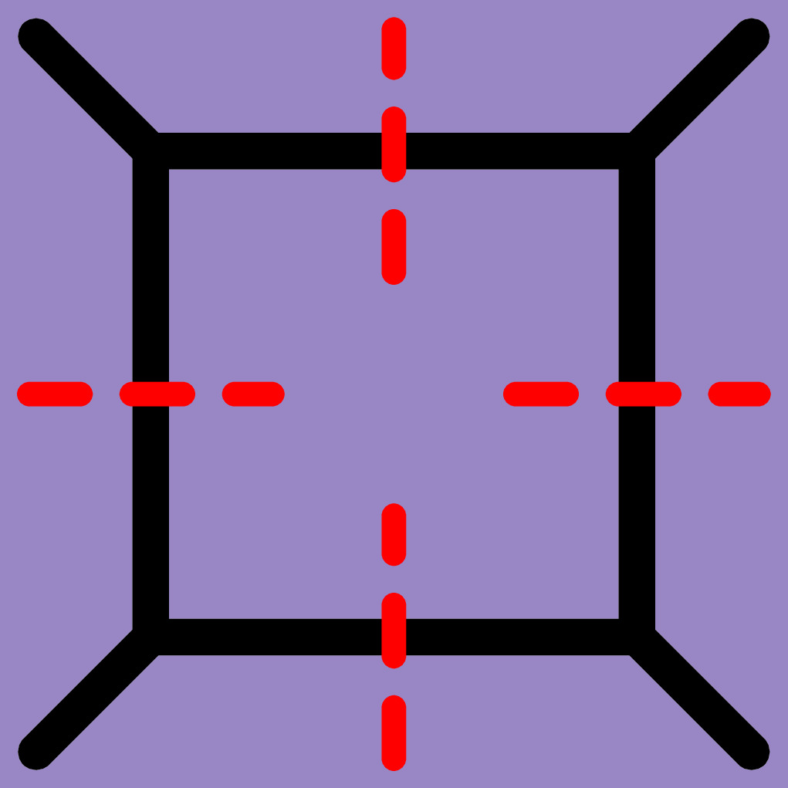
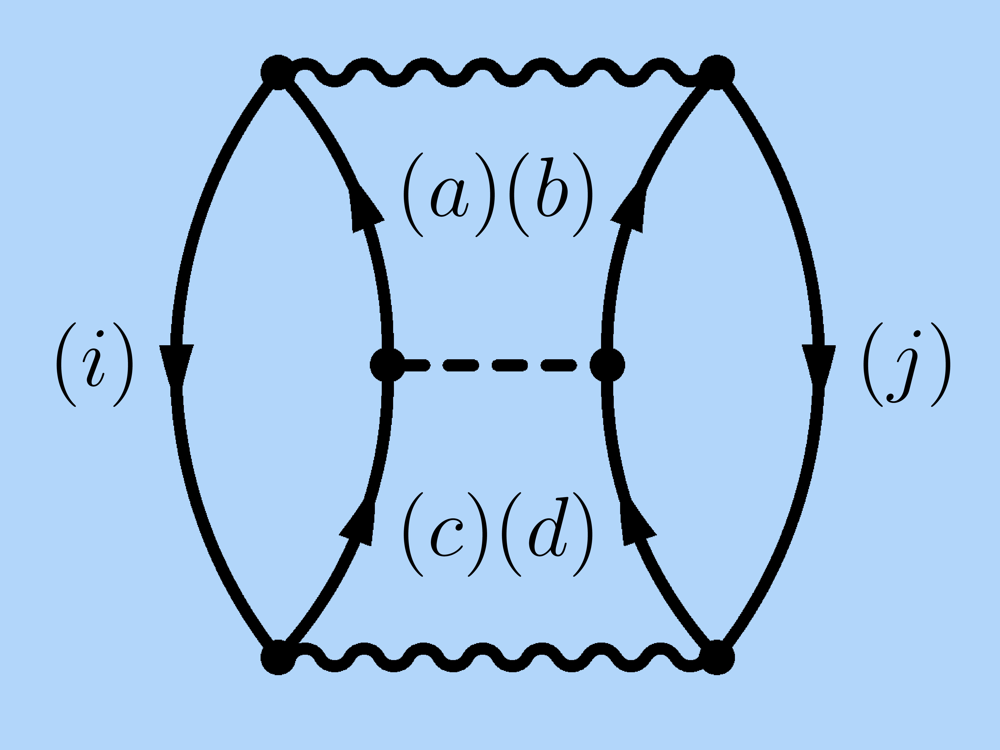
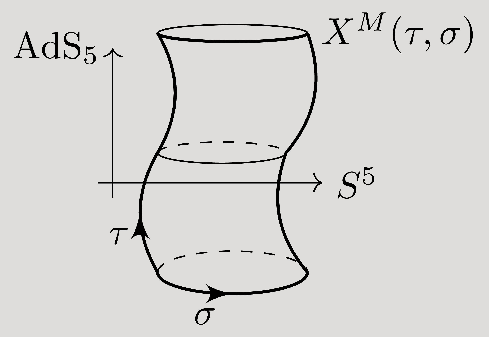
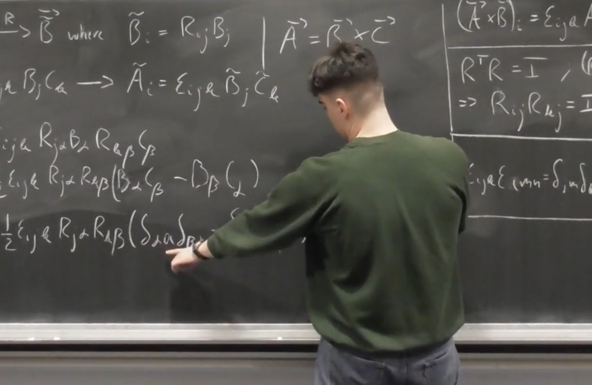
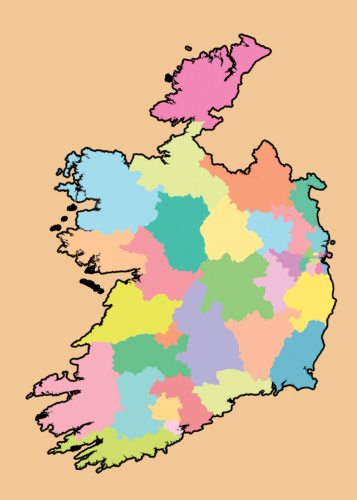
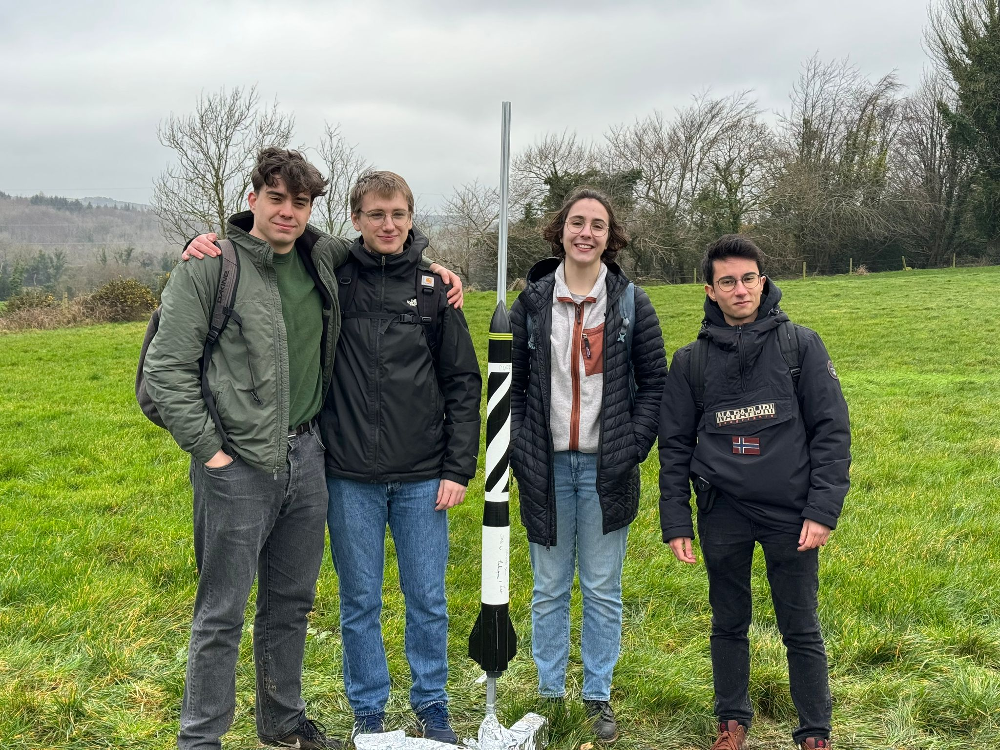

Research
|
Research Experience – Summer 2024
Participated in the Hamilton Trust Summer Internship with Eliza Somerville and Mikey Whelan.
Supervised by Prof. Ruth Britto, we studied the symbol alphabet of one-loop Feynman integrals.
Report
Slides
Poster
|

|
Research Experience – Summer 2023
Received the
Naughton Fellowship to do an REU at the University of Notre Dame.
Worked with Prof. Ragnar Stroberg on
spurious isospin symmetry breaking in the IMSRG formalism of ab initio many-body nuclear theory.
Report
Slides
Pre-print (nucl-th/2412.10693)
|

|
Bachelor Thesis – 2023/2024
My thesis was a review of Foundations of the \(\small\text{AdS}_5\times S^5\) Superstring in which
I reproduced many of the results from the first two chapters. It involved learning about basic string theory, superalgebras, the Green-Schwarz superstring
in \(\small\text{AdS}_5\times S^5\), and how one could go about quantising it in the light-cone gauge. It turns out to be difficult to quantise the model
directly so one resorts to a perturbative approach in the limit as the string length goes to infinity. My supervisor was Prof. Sergey Frolov.
Thesis
Slides
Poster
|

|
Visualisations
|
Interactive Cloud Chamber – Nov 2024
A cloud chamber reveals charged particles which are usually invisible to the naked eye. These basic experiments
played a historical role in our understanding of particle physics, and can be made at home with a bit of effort!
I created this interactive webpage as a convenient version of the real thing, where you can choose which particle
to observe.
Interactive chamber
|

|
Interactive Potts Model – Oct 2023
Following an independent reading project on statistical field theory, my interest
in critical behaviour led to this visual showcase of the square lattice Potts model. To play around with the
lattice, see the interactive gallery (best on desktop). If you want to skip straight to the theory behind it,
see the explanation.
Explanation
Interactive gallery
|

|
Solitons in 1 dimension – Nov 2023
Learned about basic soliton theory with Eliza Somerville and wrote a
short introduction to solitons in 1+1 dimensions, namely solutions to the KdV equation and kink solitons for a \(\small\phi^4\) potential and a sine-Gordon potential.
Explanation
Satisfying animations
|

|
Communication
|
Part III Seminar – Dec 2024
I enjoyed learning about the on-shell bootstrap techniques for tree-level amplitudes from Cliff Cheung's TASI lectures, so I decided to prepare
a student seminar for my master's cohort on the Parke-Taylor formula and loop amplitudes.
Slides
|
|
Physics Communication – 2023
Wrote and filmed a video series introducing index notation, the Levi-Civita symbol and Einstein summation
convention for the Theoretical Physics Student Association (TPSA).
ESC #1
ESC #2
Made a video on the critical temperature of the Ising Model with Mikey Whelan.
|

|
Miscellaneous
|
Electoral Redistricting – May 2023
Sparked by the Real World Mathematical Modelling
hackathon event, applied multi-objective optimisation and data science techniques to the electoral
redistricting of Ireland. I worked with Eliza Somerville,
Ben McGloin and Mikey Whelan.
Report
Github
|

|
MathDeriver – Oct 2024
As part of the 1-day Flywheel: Tools for Science
hackathon event, I collaborated with Joe George and Piotr Toka to create a python script capabale of providing users with the derivation of numbered equations from arXiv articles.
Github
|
|
Rocket Launch – Jan 2024
Built a simple model rocket, Puffin 1, with the Rocketry Comittee of the Trinity Space Society. Some wind led to the launch going sideways... Pictured are myself, Nathan Besch, Grace Madison and Oskar García García de las Heras.
Trinity News article
Video of launch
|

|